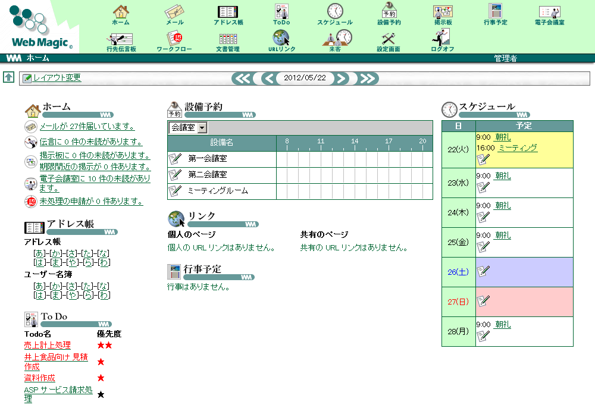

1. ホーム¶
ホームとは、ログイン画面の次に表示される画面です。ホームは、ログインしたユーザー個々の確認すべき情報が表示されます。
1.1. ホームの画面を確認する¶
ホームにはログイン時の最新情報が表示されます。ホーム画面から WebMagic の機能を使うことができます。 [1]

<説明>
| ユーザー名 | 現在、ログインしているユーザー名が表示されます |
| テロップ表示 | 掲示板、電子会議室、個人宛の伝言など新しい情報が表示されるので見落としがなくなります |
<機能>
| ホーム | メール･行先伝言版･掲示板･電子会議室･ワークフローの新着件数や未読件数を表示します |
| 設備予約 | プルダウンメニューから会議室の他に 「営業車」「備品」 などカテゴリ登録しておくと画面切り替えができます |
| ToDo | 個人のこなすべき作業、仕上げるべき仕事をホーム画面に表示させるため便利です |
| スケジュール | ユーザーの一週間分のスケジュールが表示されます |
| アドレス帳 | ホーム画面からユーザー名を頭文字から検索できます |
| 行事予定 | 当日に行われる行事の予定が表示されます |
| リンク | 個人で登録した URL リンクと、管理者が登録した URL リンクの一覧が表示されます |